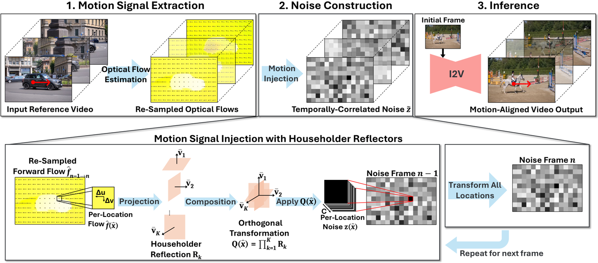

Think of the starting noise as a grid of dice. Warping slides the dice to follow the motion, and sliding smears them, so someone has to re-roll and fix the result. HME leaves every die where it is and turns it by an amount set by the local motion. A turned die is still a fair die, yet the next frame now remembers how this spot moved.
시작 노이즈를 주사위 격자라고 생각해 보자. 워핑은 움직임을 따라 주사위를 밀어 옮긴다. 밀다 보면 번지고 뭉개져서 다시 굴리고 고쳐야 한다. HME는 모든 주사위를 제자리에 둔 채 돌린다. 돌리는 양은 그 자리의 움직임이 정한다. 돌린 주사위도 여전히 공정한 주사위지만, 다음 프레임은 이 자리가 어떻게 움직였는지 기억한다.
How it works: flow becomes a rotation작동 방식은 광류를 회전으로 바꾸기
HME only changes the starting noise. The diffusion model, its loss and its architecture stay the same.
HME는 시작 노이즈만 바꾼다. 확산 모델의 구조와 손실 함수는 그대로다.

- Get the flow.광류 얻기.RAFT estimates frame-to-frame flow, averaged down to the latent grid. It can come from a reference clip, a camera path or a user drag.RAFT로 프레임 사이 광류를 구해 잠재 격자 크기로 평균 낸다. 참조 영상, 카메라 경로, 사용자 드래그 어디서 와도 된다.
- Rotate the noise.노이즈 회전.Fixed random projections lift each 2D flow vector into K reflection directions. Their product rotates the 16 channel values at that spot, frame after frame.고정된 무작위 사영이 2차원 광류 벡터를 반사 방향 K개로 바꾼다. 이들의 곱이 그 자리의 16개 채널 값을 프레임마다 회전시킨다.
- Fine-tune once.한 번 미세 조정.CogVideoX-5B is LoRA-tuned on 100K videos with this noise, so it learns to read the cross-frame links as motion.CogVideoX-5B를 이 노이즈로 영상 10만 개에 LoRA 학습시켜, 프레임 사이 연결을 움직임으로 읽게 만든다.
Key point: no correction, so it is cheap핵심은 보정이 없으니 싸다는 것
Because the rotation is Gaussian by construction, HME skips the correction step that makes warping expensive.
회전은 처음부터 가우시안을 보존하므로, HME는 워핑을 비싸게 만드는 보정 단계를 건너뛴다.
Results: tighter motion with less data결과는 더 적은 데이터로 더 정확한 움직임
On DAVIS motion transfer, HME follows the reference motion most closely, though it was tuned on about 40× fewer videos than GWTF.
DAVIS 모션 전이에서 HME가 참조 움직임을 가장 잘 따른다. GWTF보다 약 40분의 1의 영상으로 학습했는데도 그렇다.
Under camera control on DL3DV, HME is best on all seven metrics, including trajectory error.
DL3DV 카메라 제어에서 HME는 궤적 오차를 포함한 일곱 지표 모두에서 가장 좋다.
| Method | FID ↓ | FVD ↓ | PSNR ↑ | LPIPS ↓ | ATE ↓ |
|---|---|---|---|---|---|
| MotionPro | 37.2 | 291.5 | 12.70 | 0.545 | 0.825 |
| DisMo | 22.5 | 187.1 | 12.26 | 0.506 | 1.155 |
| TTM | 21.4 | 196.5 | 12.76 | 0.443 | 0.464 |
| GWTF | 23.4 | 235.3 | 12.63 | 0.431 | 0.473 |
| HME | 20.3 | 175.1 | 13.66 | 0.402 | 0.421 |
The noise itself can carry a control signal, as long as the change preserves its distribution. Rotations do that for free, so they are a natural tool whenever you want to inject structure into diffusion noise.분포만 지킨다면 노이즈 자체가 제어 신호를 실어 나를 수 있다. 회전은 이를 공짜로 해 주므로, 확산 노이즈에 구조를 넣고 싶을 때 자연스러운 도구다.
The 2.7× covers noise construction only, not sampling, and the model still needs LoRA tuning (40 GPU days). On MC-Bench, supervised controllers track trajectories more tightly. Baselines use their released checkpoints, and fast non-rigid motion stays hard.2.7배는 노이즈 생성 단계만의 이야기이고 샘플링 시간은 아니다. 모델은 여전히 LoRA 학습(GPU 40일)이 필요하다. MC-Bench에서는 지도 학습 제어기가 궤적을 더 정확히 따른다. 기준선은 공개 체크포인트를 그대로 썼고, 빠른 비강체 움직임은 여전히 어렵다.